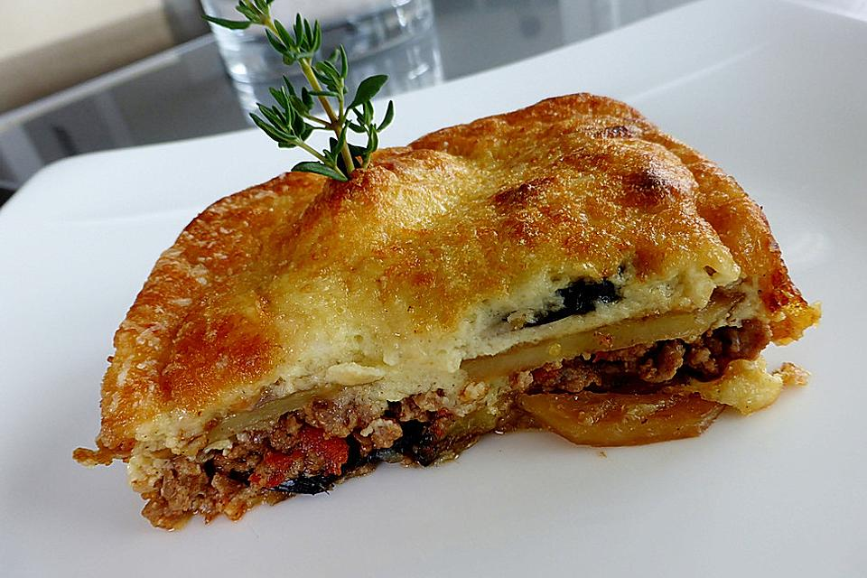

Griechisches Moussaka
Zubereitung
Auberginen salzen, 30 Minuten stehen lassen. Anschließend sorgfältig trocken tupfen. Öl in einer
Pfanne erhitzen. Die Scheiben von jeder Seite ca. 30 Sekunden anbraten. Herausnehmen und auf
Küchenpapier abtropfen lassen. Erneut Öl in der Pfanne erhitzen und die Kartoffelscheiben unter mehrmaligem Wenden 10 Minuten
anbraten.
In einem Topf etwas Öl erhitzen, Fleisch, Zwiebeln und Knoblauch darin anbraten. Tomaten zufügen und etwas zerkleinern. Mit Lorbeer, Zimt, Salz, Pfeffer und Muskatnuss würzen. Unter ständigem Rühren bei geöffnetem Topf so lange dünsten, bis sämtliche Flüssigkeit verkocht ist. Das Lorbeerblatt entfernen, nochmals abschmecken.
Den Topf vom Herd nehmen und 2 Eier unterrühren. In einem zweiten Topf die Butter zerlassen. Mit Mehl bestäuben und kurz anschwitzen. Nach und nach die Milch zugießen und unter Rühren dicklich einkochen lassen. Mit Salz, Pfeffer und Muskatnuss pikant abschmecken. Den Topf vom Herd nehmen, einen Esslöffel Käse und die restlichen Eier hineinrühren. Eine große, flache Auflaufform mit Olivenöl fetten.
Die Hälfte der Kartoffeln und Auberginen einfüllen. Mit Salz, Pfeffer und Muskatnuss würzen und mit etwas Käse bestreuen. Anschließend die Hackfleischmasse gleichmäßig darauf verteilen. Die restlichen Kartoffeln und Auberginen darauf geben und mit der Sauce begießen. Mit Käse bestreuen.Die Moussaka bei 180 °C Umluft im vorgeheizten Backofen 30 - 40 Minuten backen.
In einem Topf etwas Öl erhitzen, Fleisch, Zwiebeln und Knoblauch darin anbraten. Tomaten zufügen und etwas zerkleinern. Mit Lorbeer, Zimt, Salz, Pfeffer und Muskatnuss würzen. Unter ständigem Rühren bei geöffnetem Topf so lange dünsten, bis sämtliche Flüssigkeit verkocht ist. Das Lorbeerblatt entfernen, nochmals abschmecken.
Den Topf vom Herd nehmen und 2 Eier unterrühren. In einem zweiten Topf die Butter zerlassen. Mit Mehl bestäuben und kurz anschwitzen. Nach und nach die Milch zugießen und unter Rühren dicklich einkochen lassen. Mit Salz, Pfeffer und Muskatnuss pikant abschmecken. Den Topf vom Herd nehmen, einen Esslöffel Käse und die restlichen Eier hineinrühren. Eine große, flache Auflaufform mit Olivenöl fetten.
Die Hälfte der Kartoffeln und Auberginen einfüllen. Mit Salz, Pfeffer und Muskatnuss würzen und mit etwas Käse bestreuen. Anschließend die Hackfleischmasse gleichmäßig darauf verteilen. Die restlichen Kartoffeln und Auberginen darauf geben und mit der Sauce begießen. Mit Käse bestreuen.Die Moussaka bei 180 °C Umluft im vorgeheizten Backofen 30 - 40 Minuten backen.
Rezept erstellt von
 Matthias
Matthias